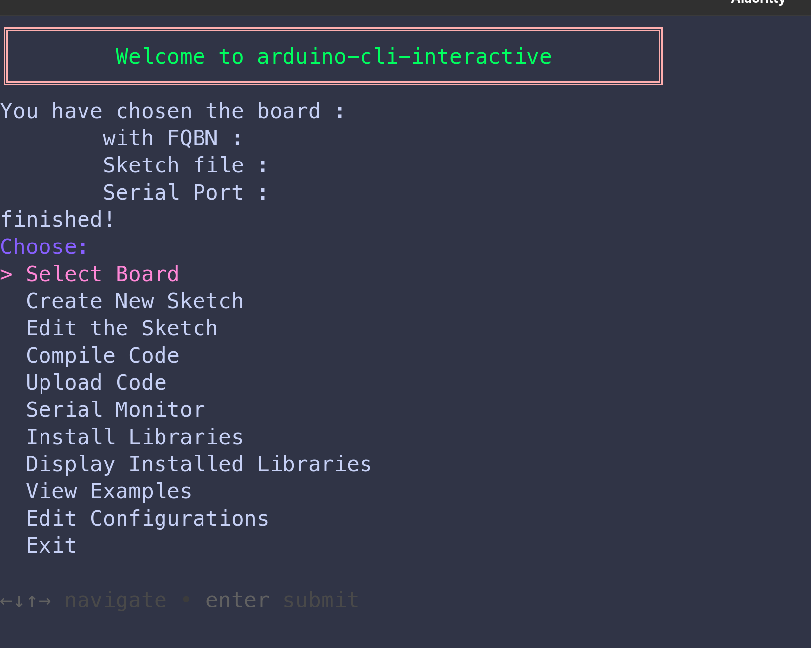
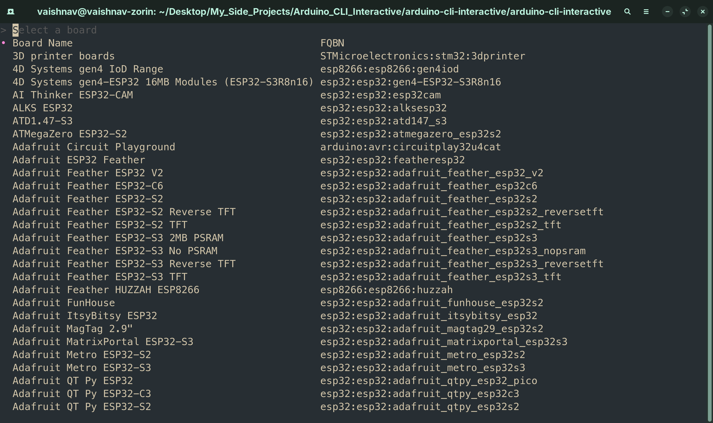
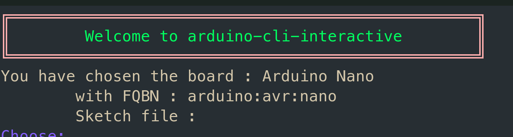
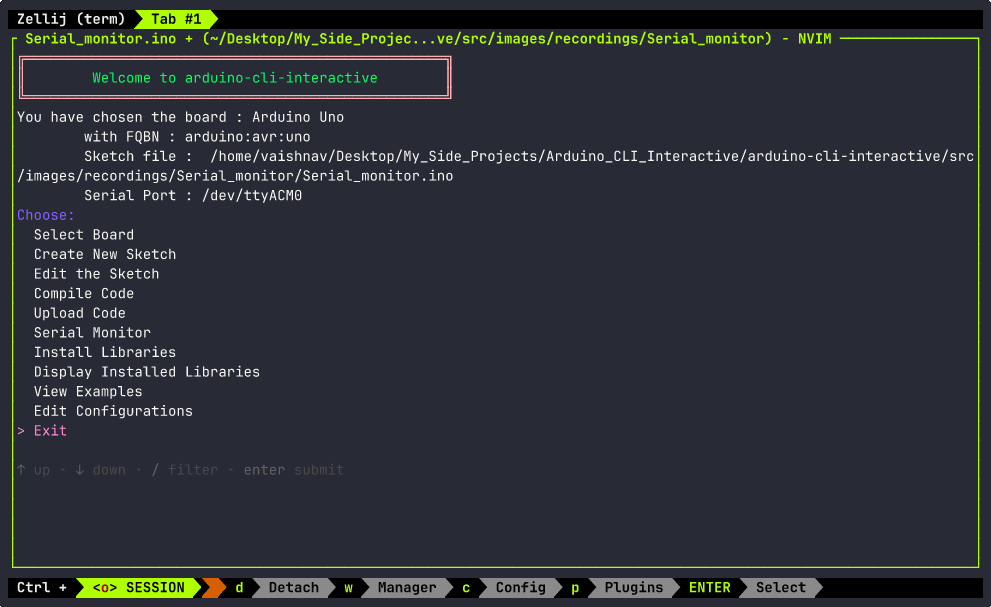
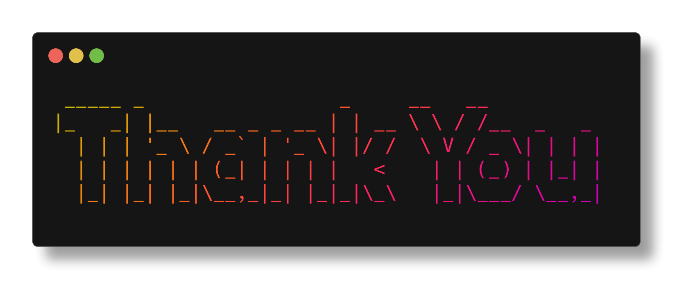

NOTE : This page is only for those who are just starting out with Arduino programming.
If you already have an idea on Arduino , you can skip this page and go to Chapter 1
Introduction
What is Arduino ?
Arduino is an open-source microcontroller platform designed for building and programming electronic projects with ease and flexibility.
What is Arduino used for ?
-
Robotics Projects: Build and control robots, including autonomous vehicles and robotic arms.
-
Home Automation: Automate lights, temperature, and security systems for smart home setups.
-
IoT Applications: Create Internet-connected devices for data monitoring and control.
-
Prototyping Electronics: Test and develop innovative electronic circuits and gadgets.
-
Educational Tools: Learn programming, electronics, and engineering concepts interactively.
Arduino boards come in many flavors , som eof the most famous ones being :
- Arduino Uno
- Arduino Nano
- Arduino Mega
All Arduino boards are programmed using the Arduino IDE.
The Arduino IDE (Integrated Development Environment)
The Arduino IDE is the software that is used to program the Arduino Boards. It has a pretty easy-to-use interface that can make it easier for beginners to learn how to use Arduino using the Arduino IDE.
Check out the official Arduino website for more information on the IDE.
The Arduino CLI (Command-Line Interface)
Now , installing the Arduino IDE in Windows is as easy as going to their website clicking on Download and done .
But in the case of macOS (older distributions) and linux (especially) , the IDE requires a huge amount of permissions to be able to access the Serial Ports (The USB port in which the Arduino Board is connected).
To avoid this , we do not have to install the Arduino IDE , instead , we can use the command line version
of the IDE known as arduino-cli.
This tool uses the Command Line Interface (CLI) instead of the traditional Graphical User Interfaces (GUI) of the Arduino IDE.
This makes it easy for devs who want to use Arduino through linux.
But , there is one teensy little problem.
Here is an example of a command to upload the Arduino Sketch title "MySketch" to an Arduino Uno board.
arduino-cli upload -p /dev/ttyUSB0 --fqbn arduino:avr:uno MySketch/MySketch.ino
Here -p represents the serial port and the --fqbn flag represents the "Fully Qualified Board Name" ,
which is used to denote the boards.
Now , remembering the FQBN of 2 or 3 boards is pretty easy , but in case you are working with multiple boards of different types , say you are working with Arduino Uno , Arduino Nano , or ESP32. Remembering the FQBN of each and every board become increasingly difficult.
To combat this problem , the project arduino-cli-interactive or aci was born.
Chapter 1 (Installation of Tools)
Installation of arduino-cli-interactive or aci
For now there are 2 ways to install the aci tool.
- Download from source
git clone https://github.com/Vaishnav-Sabari-Girish/arduino-cli-interactive.git
cd bash_shell_script
chmod +x main.sh
./main.sh
- Using Homebrew
To download aci using Homebrew , you need to first have homebrew installed.
To install homebrew , copy and paste this script in your terminal
/bin/bash -c "$(curl -fsSL https://raw.githubusercontent.com/Homebrew/install/HEAD/install.sh)"
After Homebrew is installed , copy and paste the following commands in the terminal
brew update
brew tap vaishnav-sabari-girish/arduino-cli-interactive
brew install aci
Pre-requisites
For the aci tool to work as intended , there are 2 prerequisite tools required.
arduino-cli
Arduino-cli can be installed using 2 ways
- Using Homebrew
brew update
brew install arduino-cli
- Using their installation script
curl -fsSL https://raw.githubusercontent.com/arduino/arduino-cli/master/install.sh | sh
For other installation methods , check out their website here
gum
This tool helps create awesome looking Terminal User Interfaces (TUI's).
You can download gum in multiple ways.
- Using Homebrew
brew update
brew install gum
- Using Package Managers
#Arch Linux (btw)
pacman -S gum
# Nix
nix-env -iA nixpkgs.gum
# Flox
flox install gum
You can also install a few alternative text editors if you do not want to use the default nano editor
of linux.
Some options are :
sudo apt-get install micro
sudo apt-get install vim
sudo apt install nvim
sudo apt install gedit
sudo apt-get install wget gpg
wget -qO- https://packages.microsoft.com/keys/microsoft.asc | gpg --dearmor > packages.microsoft.gpg
sudo install -D -o root -g root -m 644 packages.microsoft.gpg /etc/apt/keyrings/packages.microsoft.gpg
echo "deb [arch=amd64,arm64,armhf signed-by=/etc/apt/keyrings/packages.microsoft.gpg] https://packages.microsoft.com/repos/code stable main" |sudo tee /etc/apt/sources.list.d/vscode.list > /dev/null
rm -f packages.microsoft.gpg
sudo apt install apt-transport-https
sudo apt update
sudo apt install code # or code-insiders
#Using snap
snap install codium --classic
#Using Nix
nix-env -iA nixpkgs.vscodium
#Arch Linux
yay -S vscodium-bin
#For Debian/Ubuntu distros
wget -qO - https://gitlab.com/paulcarroty/vscodium-deb-rpm-repo/raw/master/pub.gpg \
| gpg --dearmor \
| sudo dd of=/usr/share/keyrings/vscodium-archive-keyring.gpg
echo 'deb [ signed-by=/usr/share/keyrings/vscodium-archive-keyring.gpg ] https://download.vscodium.com/debs vscodium main' \
| sudo tee /etc/apt/sources.list.d/vscodium.list
sudo apt update && sudo apt install codium
#For Debian/Ubuntu distos
sudo add-apt-repository ppa:maveonair/helix-editor
sudo apt update
sudo apt install helix
#For Fedora/RHEl
sudo dnf install helix
#Homebrew
brew install helix
#AppImage (First download the .AppImage file from the official helix repo)
chmod +x helix-*.AppImage # change permission for executable mode
./helix-*.AppImage # run helix
Post Installation
After the installation of aci there is one small step you have to do.
Type the following in the terminal
arduino-cli board listall
arduino-cli core install arduino:avr
This step will make sure you have the cores of the basic Arduino Boards like Uno , Nano etc.
Chapter 2 (How to use aci PART - 1)
By the end of this chapter , you will be able to do the following :
Select a Board
Open your terminal and type aci.
You will be greeted with this page

Press Enter to enter the Board Selection Menu :

Type the Board Name you want to use and press Enter.
Then a confirmation dialog box will open asking you to confirm the board you chose.
Check the following GIF to see it in action.
For example , let's use an Arduino Nano that is connected to my system ,
Once you have selected a board, you can see the Board name and FQBN (Full Qualified Board Name) just below the "Welcome to arduino-cli-interactive" sign like so

Create a New Sketch
A sketch is a file with the .ino extension in which you will write the code to upload
to the board.
To create a new sketch , first navigate to the directory you want the sketch to be in , in the terminal , run the aci command , select a board and then use the
Down arrow key to move down to the next option which Create a New Sketch and press Enter.
This will then bring up an Input box where you can enter the name of your sketch.
Congrats , you have created a new sketch using the command line.
Edit a Sketch
After creating a new sketch , let us add the code to be uploaded to the board.
We will create a basic LED Blinking program to blink the inbuilt LED of the board every 1 second.
Before we get into editing the sketch , copy the below program :
const int ledPin = 13; //Depends on the board , for Uno and Nano it is pin 13
void setup() {
//This function will run only once when the board boots up
pinMode(ledPin , OUTPUT); //Setting the ledPin as OUTPUT
}
void loop() {
//This function runs infinitely until it is stopped
digitalWrite(ledPin , HIGH); //Turn ON the LED
delay(1000); //1 second delay
digitalWrite(ledPin , LOW) ; //Turn OFF the LED
delay(1000); //1 second delay
}
Now , let us go to the terminal where aci is already running and then open the sketch MyFirstSketch ,
we created previously.
Make sure you have selected your board and the sketch has been created.
Now navigate to the Edit the Sketch option using the Down arrow key and press Enter.
This will bring up a file picker throuh which you can navigate using the arrow keys to find the folder in which the sketch is present.
Once you find the folder , press Enter , you can then see the .ino file in the file picker.
Press Enter again and you will see a choice picker to pick your preferred editor. I will be using NeoVim as my main editor. You can choose whatever editor feels comfortable to you.
NOTE :
Make sure you have any one of the following editors installed :
Select the editor of your choice.
You will now be able to edit the file. If you are opening the file for the first time , you will be greeted with this code
void setup(){
//Run only once when the board boots up
}
void loop(){
//Run infinitely until stopped
}
This is the default boilerplate code of any Arduino file.
There are 2 functions setup() and loop().
setup() runs only once. It runs when the board is switched ON.
loop() run infnitely until it is stopped by switching OFF the board or by an interrupt.
In the example code that was given , we can see that we have defined the constant
ledPin as an Output in the setup() function and toggled the LED in the loop() function.
You can paste the example code by deleting the default contents of the file and then pasting the given code.
Then you can save the code and exit the editor.
You will then be asked if you want to preview the contentns of your file to check for any kind of mistakes.
Choose YES or NO by navigating between them using arrow keys.
To quit the preview , press q on your keyboard.

NOTE :
Each editor has different shortcuts to save and exit a file
- Vi/Vim/NeoVim/Helix :
:wq - Nano :
Ctrl + S , Ctrl + X - Micro :
Ctrl + S , Ctrl + Q - Visual Studio Code/VSCodium :
Ctrl + S , Alt + F4
Chapter 3 (How to use aci Part - 2)
By the end of this chapter , you will be able to
Compile Code
To compile the code in the Sketch you created previously , we open the
and make sure that aci is running and you must have Selected the Board ,
Created a new Sketch and Edited the Code.
We then use the Arrow keys to naviigate to the Compile Code Option and press Enter.
Since you have already selected the board , it will compile the code for that specific board.
In the following example we will compile the code for an Arduino Nano.
Upload Code
To upload the code , you need to first Compile the code and then back in the homepage , navigate to the Upload Code option and press Enter
Once you are inside the Upload Code , you will be asked to choose the Serial Port your board is connected to.
In Linux/macOS , the Serial port will show up as /dev/ttyUSB0 and for windows , it will show up as
COM7 or any other number other than 7.
After selecting the Serial Port , you will then be asked to choose between OLD and NEW Bootloaders. OLD Bootloaders as usually only for Arduino Nanos , so make sure you do not mess up that one. Choose between OLD and NEW Bootloaders and the the code will be uploaded.
In the below recordings , one will be for Arduino Nano (Old Bootloader) and one for the WeMOS D1 R1 (New Bootloader).
Old Bootloader.

New Bootloader
Install Libraries
To install libraries , there is no need to Select a board or Create a New Sketch.
Open a new terminal and type aci.
The Navigate to the Install Libraries option using the Arrow Keys and click Enter
Now an input dialog box will appear prompting for the name of the library. Enter the name of the library and press Enter
When do you do , there will be a list of libraries that have the name you entered. Select the one you want to install and click Enter
Let us install the DHT11 Library by Dhrubha Saha.
To check if the library has been installed , type arduino-cli lib list and check the table
for the library you just installed. If it is present then the library has been installed successfully.
You have successuflly , compiled and uploaded a sketch and also installed a library.
Chapter 4 (How to use aci Part 3)
By the end of this chapter , you will be able to add 3rd party cores to the aci tools.
These 3rd party cores are required to be able to use boards like ESP32 and ESP8266.
To do this , we have to first create the config file. To create the config file , type the following in the terminal
arduino-cli config init
This will create the config.yaml file at /home/<username>/.arduino15/arduino-cli.yaml.
The previous step is optional. Because the script itself will create it for you. Just incase it doesn't , you have to create the .yaml file using the command given above.
To do the above , type aci in the terminal , navigate to Edit Configurations option and choose your
preferred editor.
Then copy and paste the following links for :
- ESP8266
http://arduino.esp8266.com/stable/package_esp8266com_index.json
- ESP32
https://raw.githubusercontent.com/espressif/arduino-esp32/gh-pages/package_esp32_index.json
Then exit the editor.
Then in the terminal type :
arduino-cli core update-index
arduino-cli core install esp32:esp32 (esp8266:esp8266 for ESP8266)
arduino-cli board install
#To list all boards
arduino-cli board listall
Chapter 5 (How to use aci Part 4)
NOTE : These features were introduced from aci version 1.0.2.
By the end of this chapter , you will be able to do the following :
Display Installed Libraries
We installed the libraries as shown in Chapter 3
To confirm that they have been installed and to also view all out installed libraries , navigate to the Display Install Libraries option using the arrow keys and press Enter.
You will now be able to see all the libraries installed in our system.
View Library Examples
To make it easier for first time users , the developers of each library have created a few basic examples that outline how to use their libraries and the functions present in those libraries.
To see the examples of the libraries you installed , navigate to the View Examples option using the arrow keys and press Enter.
Then navigate to the library whose examples you want to view and press Enter.
A viewing widget pops up that lets you see the contents of the example file.
You won't be able to edit the file.
You can also search for specific phrases in the widget.
You will also see that the Sketch File text on the top will have the path of the example you chose, making it easier for you to upload that very example if necessary.
Chapter 6 (Serial Monitor Output Viewing)
The Serial Monitor Feature was released in V1.0.4
There are 2 main ways to use the Serial Monitor feature in arduino-cli:
arduino-cli monitor(Default)- SSH clients like puTTY
For now , aci uses the monitor keyword to open a Serial communication between the board and the computer.
The Serial Monitor
The Serial Monitor in Arduino uses Serial communication (UART protocol) to establish a communication between the board and the programming computer or any other device like sensors.
To use the Serial Monitor feature in aci, make sure you have done the following :
The sketch used for the Hello World program is given below :
void setup(){
Serial.begin(9600);
}
void loop() {
Serial.println(9600);
delay(1000);
}
Once these are done, in the homepage , navigate to the Serial Monitor Option using the arrow keys and press Enter.
Now an Input dialog box appears that prompts you to enter the Baud Rate you used in your program (9600, 15200 etc.). Enter the correct baud rate you used and press Enter.
The Serial Monitor is now open for business. To exit the serial monitor, press CTRL + C 2 times. The second time, you will be prompted for confimation to return to the homepage. Choose what you want and press Enter.
Check out the below recording to see the Serial Monitor in action.

Thank you
I want to take a moment to express my heartfelt gratitude to you for choosing arduino-cli-interactive.
Your support and feedback have been invaluable in shaping this tool into what it is today.
Whether you’re a hobbyist, a student, or a professional, your trust motivates me to keep improving
and delivering a better experience for everyone in the Arduino community.
Your enthusiasm for this project means the world to me! If you’ve enjoyed using arduino-cli-interactive, I kindly request you to star ⭐ the repository on GitHub to help it reach more users. You can also fork 🍴 it to make your own contributions or explore its capabilities further.
I also invite you to stay connected with me as I continue this exciting journey. Be sure to follow me on Medium , Dev.to and GitHub for insightful blogs, updates, and tutorials related to Arduino, CLI tools, and embedded systems. There’s so much more coming your way, including new features for this tool and engaging content on these platforms.
Your support keeps this project alive, and your feedback helps me grow. If you have any suggestions, feature requests, or just want to share how this tool has helped you, don’t hesitate to reach out. Together, we can make arduino-cli-interactive an even more powerful tool for the Arduino community.
**Special Thanks to Charm and the Arduino for providing,
the tools (gum and arduino-cli) to make this project a success.
Thank you once again for your trust and support. Let’s build something amazing, one project at a time!

Contact Me
If you are interested to provide any kind of feedback on this project, here's how you can contact me.
Telegram :
Mastodon :
Signal :